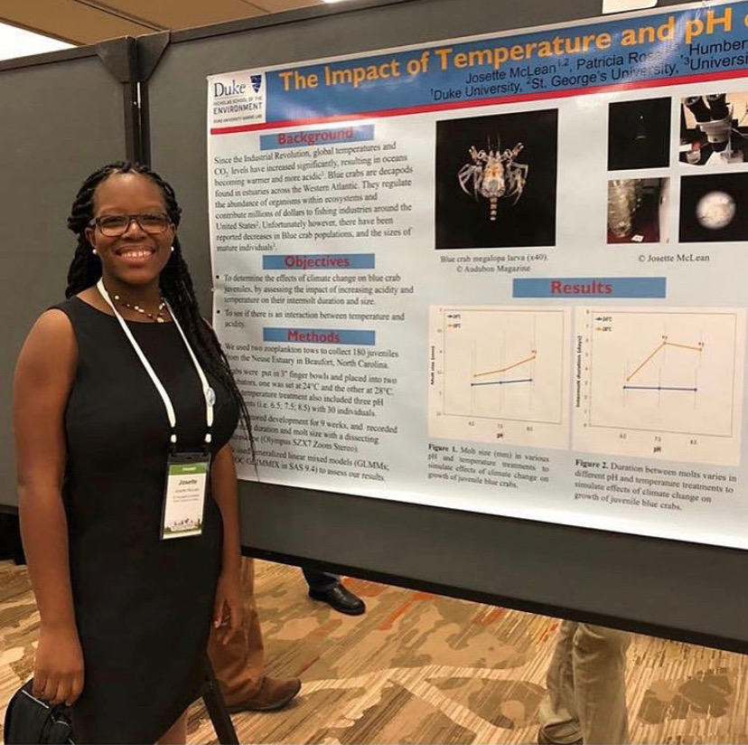

Profiles of
Black Marine Scientists
→ L-P ←
Check out #BIMSRollCall!
Mark Losavio
Favorite Publication: B. Montgomery (2018) From Deficits to Possibilities: Mentoring Lessons from Plants on Cultivating Individual Growth through Environmental Assessment and Optimization
Mark is a recent graduate of the Northeastern University Three Seas Masters Program and works as a science communicator.
"Sometimes it stinks being the only black person in your group or outfit, but the awkward messiness that comes with being a fresh or unfamiliar voice can help make things easier for the people who can look up and see themselves at the same table one day."
Chris Mantegna
Favorite Publication: Buglass et al. (2020) First records of the seven‐gilled Notorynchus cepedianus and six‐gilled Hexanchus griseus sharks (Chondrichthyes: Hexanchiformes: Hexanchidae) found in the Galápagos Marine Reserve.
Chris is a Marine Biology undergraduate (applying to graduate school now) looking to work at the intersection of epigenetic expression, marine infectious diseases & climate change.
"Set audacious goals, make yourself your number one priority, and take up space. You are an integral part of our ecosystem- not an afterthought or a check in a box- you don't just belong, you are necessary. Adjust your actions accordingly. "
Danielle Mchaskell

Favorite Publication: Kaplanis et al, R.W. et al. (2016) Distribution Patterns of the non-native seaweeds Sargassum horneri (Turner) C. Agardh and Undaria pinnatifida (Harvey) Suringar on the San Diego and Pacific coast of North America.
Danielle is a 2nd year PhD student in Dr. Jennifer Smith's lab. She is interested in understanding how invasive seaweeds may impact community dynamics and what mechanisms allow for invasion success in temperate ecosystems. Currently, she is exploring what role non-native seaweeds Undaria pinnatifida and Sargassum horneri may play in the biodiversity and abundance of native species in California.
"Know your worth": Some people may try to talk over you. Some people may try to exclude you. Some people will not be able to see what an asset you are but know that whatever room you enter, you are there because you add value to that space. Ensure that you build a supportive community that will help you build your confidence in your intrinsic value and lift you up.
Josette E.T. McLean
Favorite Publication: Brandl et al. (2020) Extreme environmental conditions reduce coral reef fish biodiversity and productivity.
Josette is a Master's Candidate at Hampton University in the department of Marine and Environmental Science. As a marine ecologist she is interested in increasing the resilience of coastal marine ecosystems (e.g. corals, mangroves, seagrasses) to anthropogenic and climate change induced stressors (e.g. ocean acidification, sea level rise, and physical disturbances).
"I love marine science because there are so many aspects of the ocean that are yet to be discovered. I love that ocean because it is one thing that connects us all as fellow inhabitants of planet earth. I love this field because the career, internship and research opportunities are virtually limitless."
Mekuleyi Gabriel Olarinde
Favorite Publication: Mekuleyi et al. (2019) Environmental health status of some aquatic ecosystem in Badagry Division of Lagos State, Nigeria
Mekuleyi is specializing in Environmental Toxicology.
"[You] should not relent on [your] Oasis. You are doing great!"
Rayna Nolen

Rayna Nolen (she/her/hers) is currently studying the abundance (in water, biota and sediments) and effects of different persistent chemical pollutants (PFASs, PAHs, PCBs, Dioxins) in Galveston Bay as a Ph.D. student at Texas A&M University at Galveston. She has loved the ocean and had a passion for conservation for as long as she can remember. She hopes to inspire the next generation of scientists to follow their dreams and fight for what they believe in, even when times get hard or they feel like giving up.
Nweze Victor Nnanna
Favorite Publication: Oguguah et al. (2017) Concentration and Human Health Implications of Trace Metals in Fish of Economic Importance in Lagos Lagoon, Nigeria
Victor is a research assistant working on targeted drug delivery.
"KEEP SAVING THE MARINE."
Ngozi Oguguah Twitter
Favorite Publication: Rizvi et al. (2020) A sustainable shipbreaking approach for cleaner environment and better wellbeing.
"Role of Indigenous Communities in saving the Delta". YouTube
“Together we achieve more- collaboration and strategic partnership is very important in marine science research."
- © 2020
- Design: HTML5 UP